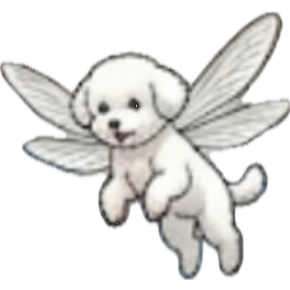
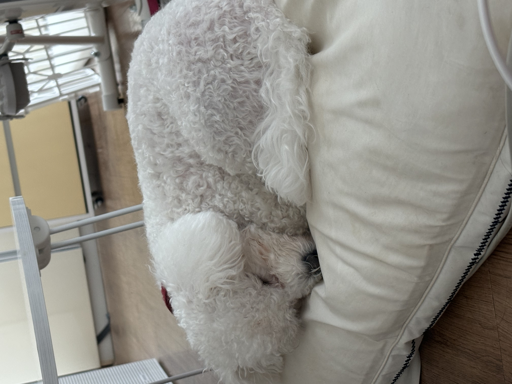
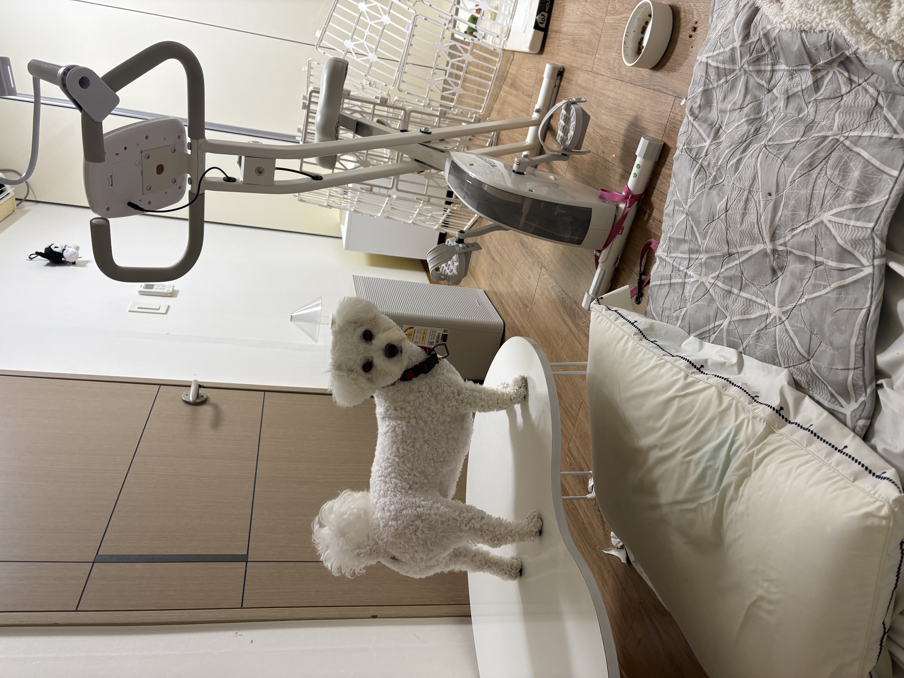
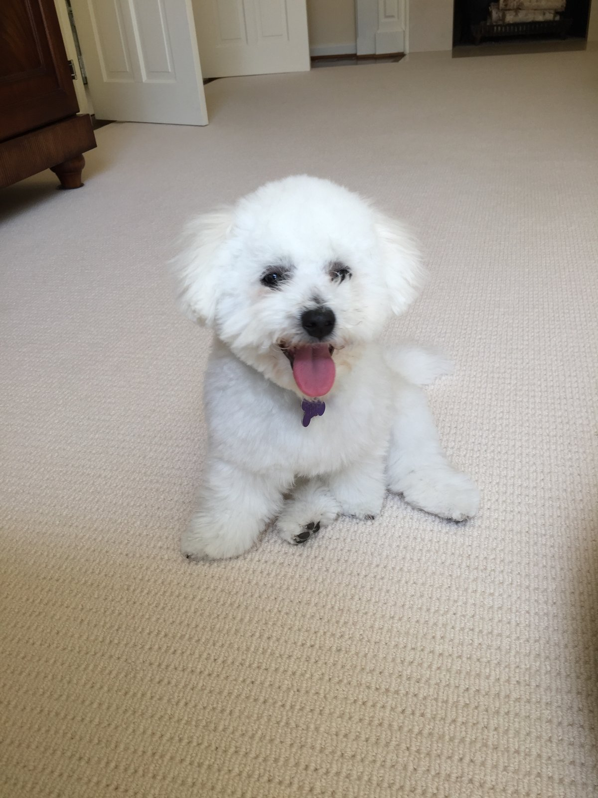
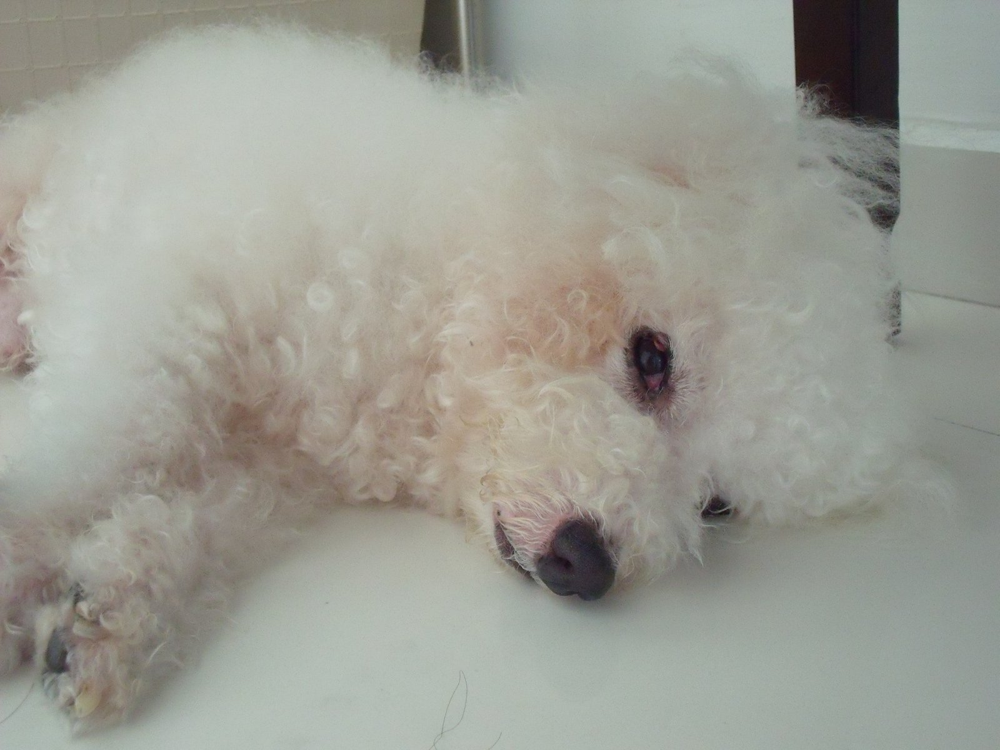
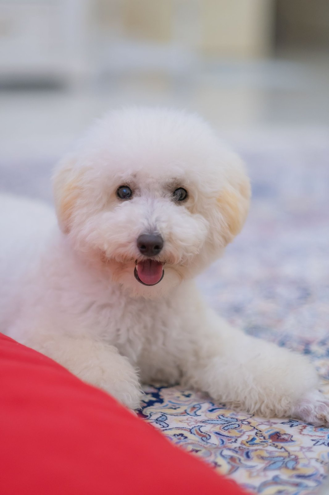
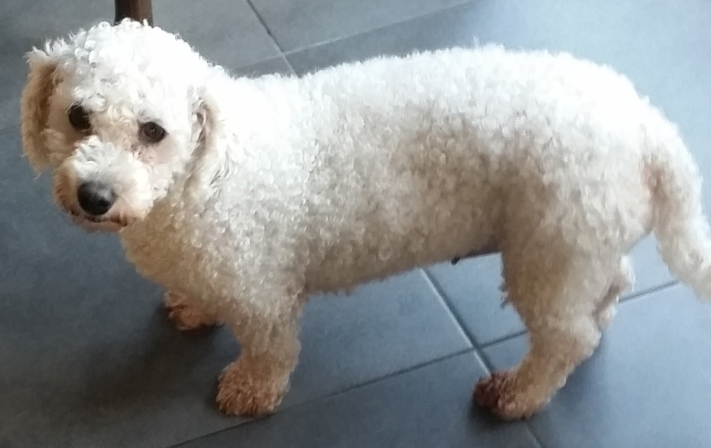
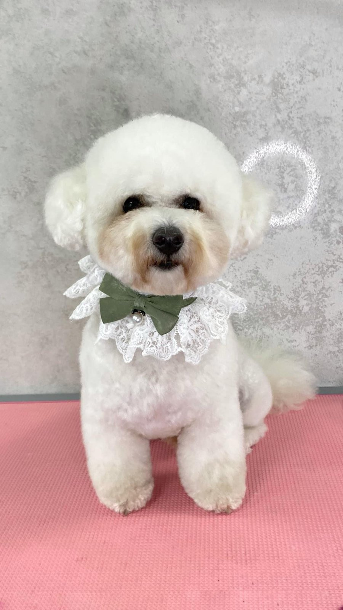

낮잠 위의 상상
쿠션에 몸을 동그랗게 말고 눈을 감으면, 뽀송이는 잠시 세상과 멀어집니다. 그때의 뽀송이는 날개가 달린 것처럼 가볍습니다. 깨고 나면 다시 혀가 바빠집니다. 손등, 바지, 빈 그릇까지 헱고 나서야 하루가 시작됩니다.
성격으로 이어 읽기
뽀송이는 우리 집 강아지입니다. 이제 두 살이고, 아직 세상 모든 게 흥미롭습니다. 사람을 보면 먼저 다가와 손을, 무릎을, 가끔은 얼굴까지 핥습니다. 그 핥기는 인사가 되고, 부탁이 되고, 사랑한다는 말이 됩니다.
먹을 것만 보이면 이야기가 달라집니다. 멀리 있어도 코가 먼저 알아채고, 작은 발이 바닥을 칩니다. 간식 봉지만 부스럭거려도 식탁 위까지 올라와 자리를 잡습니다. 그래도 하루의 끝은 늘 엄마 곁입니다. 소파든 이불이든, 엄마가 앉은 쪽이 뽀송이의 자리입니다.
2살
우리 집 막내
핥기
가장 잘하는 일
엄마
가장 좋아하는 사람
낮에는 쿠션에서 자고, 배가 고프면 눈을 뜹니다. 상상 속에서는 날개를 달고 날아다니지만, 현실에서는 간식과 엄마를 따라다닙니다.

쿠션에 몸을 동그랗게 말고 눈을 감으면, 뽀송이는 잠시 세상과 멀어집니다. 그때의 뽀송이는 날개가 달린 것처럼 가볍습니다. 깨고 나면 다시 혀가 바빠집니다. 손등, 바지, 빈 그릇까지 헱고 나서야 하루가 시작됩니다.
성격으로 이어 읽기
식탁은 뽀송이에게 무대의 중앙입니다. 사람이 앉기도 전에 먼저 올라가 자리를 보고, 접시가 내려오면 코를 내밀니다. 먹을 것이 확실해지는 순간에는 망설임이 없습니다. 달려들고, 핥고, 그다음엔 엄마 얼굴을 찾습니다.
성격으로 이어 읽기뽀송이와 닮은 하얀 컬, 동그란 얼굴, 실내 일상의 순간들입니다.





핥기의 달인
인사도 핥고, 부탁도 핥고, 미안함도 핥습니다. 손이 가까우면 먼저 혀가 도착합니다. 뽀송이에게 핥기는 말보다 빠른 애정입니다.
먹을 것만 보면 달려듭니다
봉지가 열리는 소리, 접시가 내려앉는 소리, 냉장고 문이 닫히는 소리. 그 모든 소리의 끝에는 뽀송이가 있습니다. 두 살 다리로 전력질주하는 모습은 작은 폭풍과 닮았습니다.
엄마가 제일 좋아요
다른 사람도 반기지만, 진짜 안심은 엄마입니다. 엄마가 앉으면 그 옆에 붙고, 엄마가 일어나면 따라갑니다. 하루의 중심이 엄마인 강아지입니다.
두 살의 자신감
아직 작지만, 집 안에서는 이미 주인공입니다. 식탁 위에도 올라가고, 쿠션도 자기 것으로 압니다. 그 자신감이 귀엽고, 가끔은 식탁을 흥미롭게 만들기도 합니다.
엄마 옆이 제일 편한 자리입니다. 무릎 위에 올라오지 못할 때는 발치에라도 붙습니다. 엄마가 웃으면 꼬리가 먼저 대답합니다.
간식은 협상의 언어입니다. 조금만 보여도 앉아 보고, 기다려 보고, 결국 혀를 내밀니다. 규칙은 짧고, 보상은 확실해야 합니다.
낮잠은 진지합니다. 한 번 말면 세상 소음이 줄어듭니다. 그때는 날개가 달린 상상 속 뽀송이와, 이불 속의 진짜 뽀송이가 겹쳐 보입니다.
뽀송이를 만나면 손이 촉촉해질 각오를 하면 됩니다. 먼저 핥고, 그다음 냄새를 맡고, 먹을 것이 있으면 더 솔직해집니다. 우리 집 막내 뽀송이입니다. 두 살, 핥기의 달인, 간식 앞에서 전력질주하고, 엄마를 가장 좋아하는 강아지입니다.
일상부터 다시